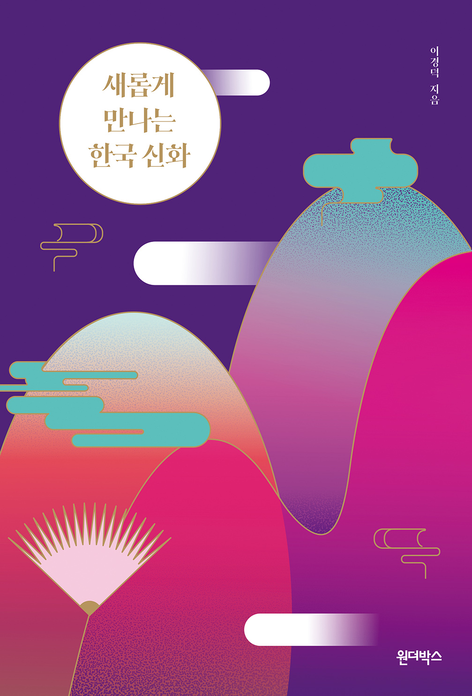
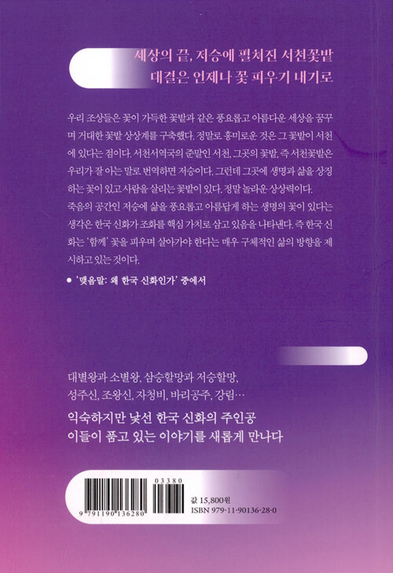

새롭게 만나는 한국 신화
이경덕 지음


2020.10.19. 출간 / 352쪽 / 128*188mm / 무선 / 인문
대별왕과 소별왕, 삼승할망과 저승할망,
성주신, 조왕신, 자청비, 바리공주, 강림…
익숙하지만 낯선 한국 신화의 주인공
이들이 품고 있는 이야기를 새롭게 만나다
누군가의 창조가 아닌 하늘과 땅이 저절로 떨어져 만들어진 세계, 노래에서 탄생한 인간, 대결의 끝은 언제나 꽃 피우기 내기, 삶과 죽음을 넘나드는 인물들, 세상의 끝 저승에 펼쳐진 꽃밭…. 살짝만 들여다봐도 한국 신화에는 흥미로운 이야기가 가득하다. 하지만 우리는 오래도록 한국 신화를 아이들에게 들려주는 옛이야기 정도로 소비해 왔다. 한편으로 한국 신화 속에 담긴 우리 문화 본질에 대한 탐구는 학자들의 영역으로 여겨 왔다. 그렇게 대별왕과 소별왕, 삼승할망과 저승할망, 성주신, 조왕신, 자청비, 바리공주, 강림 등 한국 신화의 주인공들은 이름만 남았다.
《새롭게 만나는 한국 신화》는 일반적인 교양 독자의 눈높이에서 한국 신화를 새롭게 바라보자는 취지에서 시작되었다. 문화인류학자인 저자는 신화 속 상징에 대한 탁월한 해설을 곁들이며 한국 신화 속 이야기를 풀어낸다. 타 문화권 신화와의 비교 역시 이 책의 빼놓을 수 없는 매력이다. 신화는 단순한 옛이야기나 아이들의 상상력을 키워 주기 위한 이야기가 아니다. 저자는 “신화는 고대로부터 오늘날에 이르기까지 우리 개인의 삶과 사람들의 세계관에 직간접적으로 영향을 미치면서 삶에 대한 이해나 세계를 설명한다.”라고 이야기한다. 익숙하지만 낯선 한국 신화의 주인공, 그들이 품고 있는 비밀스러운 이야기를 새롭게 만나 보자.